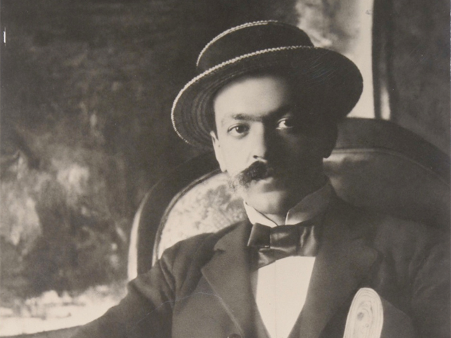
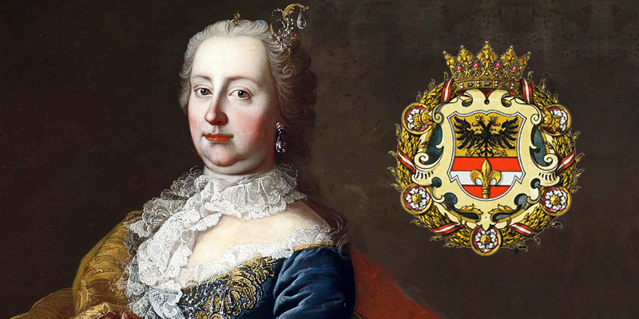
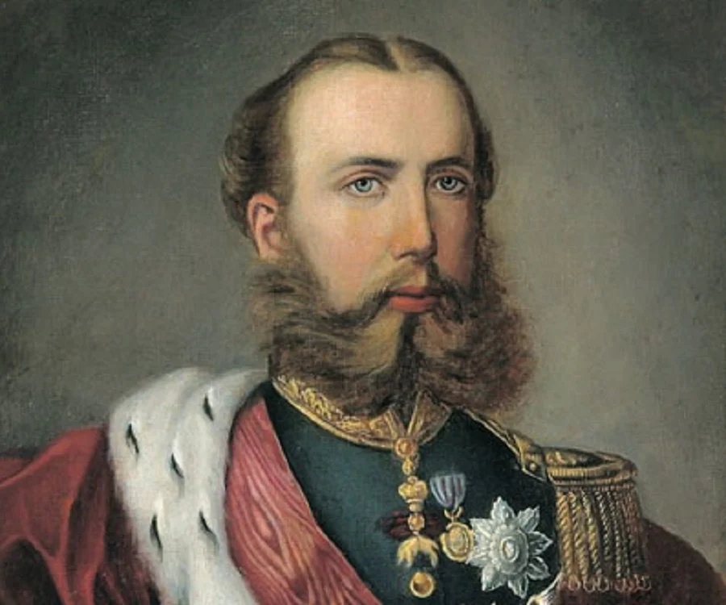

Trieste è una città che incanta per la sua posizione unica, sospesa tra il mare Adriatico e l’altopiano del Carso.
Il suo passato cosmopolita, la sua cultura mitteleuropea e la sua bellezza architettonica la rendono una destinazione imperdibile.
Con influenze italiane, austriache, slovene e ungheresi, Trieste è un mosaico di tradizioni, architetture e storie.
La città è stata per secoli il principale porto dell’Impero Austro-Ungarico, un ruolo che le ha conferito un’impronta mitteleuropea ancora oggi visibile nei suoi caffè storici, nei palazzi neoclassici e nelle piazze maestose.
Trieste è anche una città di frontiera, un luogo dove culture e lingue si incontrano, creando un’atmosfera unica.
Oggi, è un importante polo scientifico, grazie a istituzioni come il Sincrotrone Elettra e l’International Centre for Theoretical Physics (ICTP), e una meta turistica sempre più apprezzata per il suo mix di storia, cultura e natura.
La città è un vero e proprio crogiolo di identità, dove il passato e il presente si fondono in modo armonioso, offrendo ai visitatori un’esperienza indimenticabile.
Trieste è una città che offre un mix unico di storia, cultura e natura. Con questa guida completa, potrai scoprire ogni angolo di questo gioiello affacciato sul mare Adriatico, immergendoti nella sua atmosfera magica e senza tempo. Dalle sue piazze maestose ai suoi caffè storici, dai suoi monumenti iconici alle sue tradizioni gastronomiche, Trieste è una città che sa conquistare il cuore di chi la visita.
La storia
Epoca Romana (II sec. a.C.)
Trieste nasce come colonia romana con il nome di Tergeste, derivato dalla parola illirica terg, che significa "mercato". La sua posizione strategica, tra il mare e il Carso, la rese un importante nodo commerciale e militare. Durante l’epoca romana, la città si arricchì di monumenti come l’Arco di Riccardo, un arco trionfale ancora visibile oggi, e il teatro romano, situato ai piedi del colle di San Giusto. Questi resti testimoniano l’importanza di Trieste come centro urbano e culturale già in epoca antica. La città era un punto di passaggio cruciale per le rotte commerciali che collegavano l’Italia centrale con l’Europa orientale, e la sua importanza crebbe ulteriormente durante il periodo imperiale. Il teatro romano, ad esempio, poteva ospitare fino a 6.000 spettatori ed era utilizzato per spettacoli e assemblee pubbliche. L’Arco di Riccardo, invece, è uno dei pochi resti romani ancora intatti e rappresenta un simbolo della città antica.
1382 - La protezione dell’Impero Asburgico
Nel 1382, minacciata dall’espansione della Repubblica di Venezia, Trieste chiese la protezione dell’Impero Asburgico. Questo segnò l’inizio di un lungo dominio austriaco che durò oltre 500 anni. Sotto gli Asburgo, Trieste si trasformò da piccolo borgo di pescatori in uno dei principali porti del Mediterraneo. La città divenne un crocevia di culture e commerci, attirando mercanti, artisti e intellettuali da tutta Europa. Il dominio asburgico portò anche alla costruzione di importanti infrastrutture, come il porto e il Canal Grande, che ancora oggi caratterizzano il volto della città. Il Canal Grande, costruito nel XVIII secolo, era il cuore del Borgo Teresiano, il quartiere voluto da Maria Teresa d’Austria per espandere la città e favorire il commercio. Questo periodo segnò l’inizio dell’ascesa di Trieste come città cosmopolita e multiculturale.
XVIII-XIX sec. - Il periodo di Maria Teresa d’Austria
Durante il regno di Maria Teresa d’Austria, Trieste visse un periodo di grande sviluppo. La sovrana illuminata concesse alla città lo status di porto franco, favorendo il commercio e l’immigrazione. Trieste divenne un centro cosmopolita, con una fiorente comunità ebraica, greca e armena. In questo periodo furono costruiti alcuni dei simboli della città, come Piazza Unità d’Italia e il Canal Grande, che ancora oggi testimoniano la grandezza di quell’epoca. Maria Teresa promosse anche la costruzione di strade, scuole e ospedali, trasformando Trieste in una città moderna e vivace. La Piazza Unità d’Italia, ad esempio, è la più grande piazza affacciata sul mare in Europa e rappresenta il cuore politico e sociale della città. Il suo design elegante e maestoso riflette l’importanza di Trieste come centro dell’Impero Austro-Ungarico.
1918 - L’annessione al Regno d’Italia
Dopo la Prima Guerra Mondiale, Trieste fu annessa al Regno d’Italia. Questo evento, celebrato come la "redenzione" della città, portò però a tensioni con la comunità slovena locale, che rappresentava una parte significativa della popolazione. Il periodo fascista fu segnato da politiche di italianizzazione forzata, che crearono ulteriori divisioni. Nonostante ciò, Trieste rimase un importante centro culturale e commerciale, mantenendo il suo carattere cosmopolita. La città divenne anche un simbolo dell’irredentismo italiano, con molti triestini che si schierarono a favore dell’annessione all’Italia. Tuttavia, le tensioni con la comunità slovena e le politiche repressive del regime fascista lasciarono un segno profondo nella storia della città.
1943-1945 - L’occupazione nazista e la Risiera di San Sabba
Durante la Seconda Guerra Mondiale, Trieste fu occupata dalle truppe naziste, che trasformarono la Risiera di San Sabba in un campo di concentramento e sterminio. La Risiera, un ex stabilimento per la pilatura del riso, divenne l’unico campo di concentramento in Italia con un forno crematorio. Migliaia di persone, tra ebrei, partigiani e oppositori politici, furono qui imprigionate, torturate e uccise. Oggi la Risiera è un museo e un memoriale, un luogo di riflessione e ricordo. La sua visita è un’esperienza toccante e necessaria per comprendere una delle pagine più buie della storia europea. La Risiera di San Sabba rappresenta un monito contro l’odio e la violenza, e un luogo di memoria per le generazioni future.
1945-1954 - Il periodo titino e le foibe
Dopo la caduta del nazismo, Trieste fu occupata dalle truppe jugoslave di Tito. Questo periodo fu segnato da violenze e repressioni, culminate nelle foibe, cavità naturali del Carso dove furono gettati migliaia di italiani, sloveni e croati considerati nemici del regime. Le foibe rappresentano una delle pagine più dolorose della storia di Trieste e dell’Italia. Oggi, il Monumento Nazionale della Foiba di Basovizza è un luogo di memoria e riflessione, dedicato alle vittime di queste tragedie. Le foibe sono un capitolo oscuro della storia europea, che ha lasciato un segno profondo nella memoria collettiva della città e del Paese.
1947 - Il Territorio Libero di Trieste
Dopo la Seconda Guerra Mondiale, Trieste divenne un Territorio Libero sotto il controllo delle Nazioni Unite. Questo periodo di incertezza durò fino al 1954, quando la città fu ufficialmente restituita all’Italia. La questione del confine con la Jugoslavia rimase però irrisolta fino al Trattato di Osimo del 1975. Durante questi anni, Trieste visse un momento di grande fermento culturale, diventando un rifugio per artisti e intellettuali. La città divenne un simbolo della Guerra Fredda, con tensioni tra Est e Ovest che si riflettevano nella vita quotidiana dei suoi abitanti.
Oggi - Una città multiculturale
Oggi Trieste è una città multiculturale, un importante polo scientifico e una destinazione turistica di grande fascino. La sua storia complessa e il suo ruolo di frontiera la rendono un luogo unico, dove culture e tradizioni si intrecciano in modo armonioso. La città è anche un centro di ricerca di rilievo internazionale, grazie a istituzioni come il Sincrotrone Elettra e l’ICTP. Trieste è una città che guarda al futuro senza dimenticare il passato, offrendo ai visitatori un’esperienza ricca di storia, cultura e bellezza.
Personaggi

Italo Svevo
Italo Svevo, pseudonimo di Ettore Schmitz, è uno dei più importanti scrittori italiani del Novecento. La sua opera più celebre, La coscienza di Zeno, è un capolavoro della letteratura moderna che esplora la psicologia umana con ironia e profondità. Svevo visse a Trieste per gran parte della sua vita, e la città è spesso protagonista dei suoi romanzi. La sua scrittura riflette l’atmosfera mitteleuropea di Trieste, con i suoi contrasti e le sue contraddizioni. Svevo è considerato uno dei padri del romanzo moderno, e la sua opera ha influenzato generazioni di scrittori.
James Joyce
James Joyce, il celebre autore irlandese, visse a Trieste per oltre un decennio, dal 1904 al 1915. Qui insegnò inglese e scrisse gran parte dell’Ulisse, uno dei romanzi più influenti del XX secolo. Trieste ebbe un profondo impatto su Joyce, che la definì "la mia seconda patria". La città gli offrì ispirazione e tranquillità, permettendogli di sviluppare il suo stile unico e rivoluzionario. Joyce trovò a Trieste un ambiente culturale vivace e stimolante, che influenzò profondamente la sua opera.
Umberto Saba
Umberto Saba, pseudonimo di Umberto Poli, è uno dei poeti più amati della letteratura italiana. Il suo Canzoniere è una raccolta di poesie che raccontano con grande sensibilità la vita, l’amore e la città di Trieste. Saba visse gran parte della sua vita nella città, dove gestì anche una libreria antiquaria. La sua poesia è intrisa di malinconia e amore per la sua città natale. Saba è considerato uno dei poeti più importanti del Novecento, e la sua opera continua a essere studiata e amata.

Maria Teresa d’Austria
Maria Teresa d’Austria fu una delle figure chiave nella storia di Trieste. Durante il suo regno, la città divenne uno dei principali porti dell’Impero Austro-Ungarico, attirando mercanti e intellettuali da tutta Europa. La sua statua in Piazza Ponterosso è un omaggio al suo ruolo nello sviluppo della città. Maria Teresa è ricordata come una sovrana illuminata, che promosse il progresso e la modernizzazione della città.

Massimiliano d'Asburgo
Massimiliano d’Asburgo, arciduca d’Austria e imperatore del Messico, è ricordato soprattutto per il Castello di Miramare, la sua residenza triestina. Questo splendido castello, affacciato sul mare, è oggi uno dei simboli della città e una delle attrazioni turistiche più visitate. Massimiliano è una figura tragica e affascinante, la cui vita è stata segnata da ambizioni e delusioni.
Le cose da vedere assolutamente
Piazza Unità d’Italia
Piazza Unità d’Italia è una delle piazze più suggestive d’Europa e il cuore pulsante di Trieste. Circondata da imponenti palazzi neoclassici e affacciata direttamente sul mare, è la più grande piazza affacciata sul mare in Europa. Di sera, quando è illuminata, regala un’atmosfera magica, con i riflessi delle luci sull’acqua del Golfo di Trieste. I palazzi che la circondano, come il Palazzo del Municipio, il Palazzo del Lloyd Triestino e il Palazzo della Giunta Regionale, sono esempi di architettura neoclassica e barocca. La piazza è stata completamente ristrutturata nel 2001 e oggi ospita eventi culturali, manifestazioni pubbliche e mercatini. È il luogo ideale per una passeggiata, per sedersi in uno dei caffè storici e osservare la vita che scorre. Piazza Unità d’Italia è un simbolo della città, un luogo dove storia, cultura e vita quotidiana si intrecciano.
Castello di Miramare
Il Castello di Miramare è uno dei simboli più iconici di Trieste. Costruito tra il 1856 e il 1860 per volere di Massimiliano d’Asburgo, arciduca d’Austria e imperatore del Messico, il castello è un capolavoro architettonico immerso in un parco di 22 ettari. Gli interni sono arredati con mobili d’epoca, opere d’arte e oggetti personali di Massimiliano e della moglie Carlotta. Il parco, progettato dall’architetto Carl Junker, offre una vista mozzafiato sul Golfo di Trieste e ospita una vasta varietà di piante, sentieri e giardini fioriti. Oggi il castello è un museo che racconta la vita di Massimiliano e la storia dell’Impero Austro-Ungarico. La visita al Castello di Miramare è un’esperienza indimenticabile, che ti immerge nella storia e nella bellezza di Trieste.
Cattedrale di San Giusto
La Cattedrale di San Giusto, situata sulla sommità del colle omonimo, è uno dei simboli religiosi e storici più importanti di Trieste. Costruita nel XIV secolo sui resti di una basilica paleocristiana e di un tempio romano, la cattedrale è un mix di stili romanico e gotico. All’interno si trovano affreschi medievali, mosaici e opere d’arte di grande bellezza. La cattedrale è dedicata a San Giusto, patrono della città, e ospita anche un museo con reperti archeologici e religiosi. Dal colle di San Giusto si gode una vista spettacolare sulla città e sul mare, rendendo questo luogo perfetto per una passeggiata tra storia e natura.
Pedocin
Il Pedocin è l’unica spiaggia d’Europa con una separazione tra uomini e donne. Questo curioso retaggio del passato è ancora oggi una delle peculiarità della città. La spiaggia, situata nel cuore di Trieste, è un luogo popolare tra i triestini, che qui si ritrovano per prendere il sole e fare il bagno. Il Pedocin è un luogo unico, che riflette la storia e le tradizioni della città. Con il suo muro divisorio e la sua atmosfera informale, il Pedocin è un’esperienza autentica e genuina, che ti immerge nella vita quotidiana dei triestini.
Grotta Gigante
La Grotta Gigante è una delle grotte turistiche più grandi al mondo, con stalattiti e stalagmiti impressionanti. Situata a pochi chilometri dal centro di Trieste, questa grotta è una meta imperdibile per gli amanti della natura e della speleologia. Scoperta nel 1840, la Grotta Gigante è stata aperta al pubblico nel 1908 e oggi è attrezzata per visite guidate. All’interno si trova anche un sismografo, utilizzato per studiare i movimenti della crosta terrestre. La grotta è un luogo affascinante, che offre una visione unica del mondo sotterraneo. Con una profondità di oltre 100 metri e una larghezza di 65 metri, la Grotta Gigante è un vero e proprio spettacolo della natura. La visita dura circa un’ora e permette di ammirare formazioni rocciose millenarie, come la Colonna Ruggero, alta 12 metri, e la Sala dell’Altare, una delle più grandi al mondo.
Teatro Romano
Il Teatro Romano, situato ai piedi del colle di San Giusto, è uno dei resti più importanti dell’epoca romana. Costruito nel I secolo d.C., il teatro poteva ospitare fino a 6.000 spettatori ed era utilizzato per rappresentazioni teatrali e assemblee pubbliche. Oggi è un luogo di storia e cultura, che racconta secoli di vita triestina. Il teatro è stato parzialmente restaurato e oggi è utilizzato per spettacoli e concerti all’aperto, soprattutto durante l’estate. La sua posizione, nel cuore della città, lo rende facilmente accessibile e una tappa obbligata per chi visita Trieste. Il Teatro Romano è un esempio perfetto di come il passato e il presente si intreccino in questa città, offrendo ai visitatori un’esperienza unica.
Molo Audace
Il Molo Audace è una passeggiata romantica che si protende nel mare Adriatico. Costruito nel XVIII secolo, il molo prende il nome dalla prima nave italiana che vi attraccò nel 1918, dopo l’annessione di Trieste al Regno d’Italia. È il luogo ideale per ammirare il tramonto o semplicemente godersi il rumore delle onde. Il Molo Audace è un luogo di incontro e di relax, dove i triestini si ritrovano per passeggiare e godersi il mare. Di sera, quando le luci della città si riflettono sull’acqua, il molo regala un’atmosfera magica. È anche un punto di partenza per escursioni in barca o per semplicemente osservare il viavai delle navi nel porto di Trieste.
Risiera di San Sabba
La Risiera di San Sabba è un ex campo di concentramento, oggi museo e memoriale. Durante la Seconda Guerra Mondiale, la Risiera fu trasformata dalle truppe naziste in un luogo di detenzione, tortura e sterminio. Migliaia di persone, tra ebrei, partigiani e oppositori politici, furono qui imprigionate e uccise. Oggi la Risiera è un luogo di riflessione e ricordo, che testimonia una delle pagine più buie della storia di Trieste. La visita è un’esperienza toccante e necessaria per comprendere l’orrore dell’Olocausto. All’interno del museo si trovano mostre permanenti che raccontano la storia del campo e delle sue vittime. La Risiera di San Sabba è un monito contro l’odio e la violenza, e un luogo di memoria per le generazioni future.
Borgo Teresiano
Il Borgo Teresiano è un quartiere elegante con canali, negozi e caffè storici. Costruito nel XVIII secolo per volere di Maria Teresa d’Austria, il Borgo Teresiano è il cuore commerciale e culturale di Trieste. Qui si trovano alcuni dei luoghi più iconici della città, come il Canal Grande, un canale navigabile che attraversa il quartiere, e la Chiesa di Sant’Antonio Taumaturgo, con la sua imponente cupola. Il Borgo Teresiano è il luogo ideale per una passeggiata tra architetture neoclassiche e atmosfere mitteleuropee. I suoi caffè storici, come il Caffè San Marco, sono perfetti per una pausa caffè o per assaporare un dolce tipico. Il quartiere è anche un paradiso per gli amanti dello shopping, con boutique, librerie e negozi di artigianato.
Colle di San Giusto
Il Colle di San Giusto è un punto panoramico per ammirare la città e il mare. Qui si trovano alcuni dei simboli più importanti di Trieste, come la Cattedrale di San Giusto e il Castello di San Giusto. La cattedrale, costruita nel XIV secolo, è un mix di stili romanico e gotico, con affreschi medievali e mosaici di grande bellezza. Il castello, invece, è una fortezza medievale che oggi ospita un museo e offre una vista spettacolare sulla città e sul Golfo di Trieste. Il Colle di San Giusto è anche un luogo di grande interesse archeologico, con resti romani e medievali. È il luogo perfetto per chi vuole immergersi nella storia e nella cultura di Trieste, godendo al contempo di un panorama mozzafiato.
Faro della Vittoria
Il Faro della Vittoria è uno dei simboli più iconici di Trieste. Costruito nel 1927 per commemorare i caduti della Prima Guerra Mondiale, il faro si trova sulla sommità del colle di Gretta, a 60 metri sopra il livello del mare. Con un’altezza di 68 metri, è uno dei fari più alti del mondo. La sua luce è visibile fino a 35 chilometri di distanza, guidando le navi nel Golfo di Trieste. Alla base del faro si trova una statua in bronzo che rappresenta un marinaio, mentre sulla sommità si trova una corona di bronzo con la scritta "SPQR". Il Faro della Vittoria è un luogo di memoria e di orgoglio per i triestini, e offre una vista spettacolare sulla città e sul mare.
Museo Revoltella
Il Museo Revoltella è una delle più importanti gallerie d’arte moderna e contemporanea d’Italia. Fondato nel 1872 per volere del barone Pasquale Revoltella, il museo ospita una vasta collezione di dipinti, sculture e opere d’arte dal XIX secolo ai giorni nostri. Tra gli artisti rappresentati ci sono Hayez, De Chirico, Fontana e molti altri. Il museo si trova in un palazzo neorinascimentale nel cuore di Trieste ed è un luogo imperdibile per gli amanti dell’arte. Oltre alla collezione permanente, il Museo Revoltella ospita mostre temporanee e eventi culturali, rendendolo un punto di riferimento per la vita artistica della città.
Tram di Opicina
Il Tram di Opicina è uno dei pochi tram a cremagliera ancora in funzione in Europa. Inaugurato nel 1902, collega Trieste con l’altopiano di Opicina, offrendo un viaggio panoramico attraverso il Carso. Il tram è un’esperienza unica, che ti permette di ammirare paesaggi spettacolari e di immergerti nella storia dei trasporti triestini. Il percorso, lungo 5 chilometri, include tratti in salita e discesa, con pendenze fino al 26%. Il Tram di Opicina è un’attrazione imperdibile per chi visita Trieste, e un modo originale per scoprire il territorio circostante. Dopo anni che è stato chiuso, ha finalmente riaperto da poco, quindi quale occasione migliore per non venire a vederlo
La cucina triestina e le tradizioni gastronomiche
Jota
La jota è una zuppa rustica e sostanziosa, simbolo della cucina triestina. Preparata con crauti, fagioli, patate, pancetta e costine di maiale, è un piatto dal sapore intenso e inconfondibile. La jota riflette l’influenza mitteleuropea sulla cucina locale, con i crauti che ricordano le tradizioni austriache e ungheresi. Questo piatto è particolarmente apprezzato durante i mesi invernali, quando il freddo della Bora spinge i triestini a cercare comfort nel cibo. La jota viene spesso servita con una fetta di pane di segale, che assorbe il brodo saporito. È un piatto che racconta la storia di una città di frontiera, dove culture e sapori si incontrano.
Goulasch
Il goulasch triestino è una versione locale dello stufato ungherese, arricchito con spezie e servito con polenta. Questo piatto sostanzioso è perfetto per chi cerca un pasto ricco di sapori e tradizione. Il goulasch viene preparato con carne di manzo, cipolle, paprika e altre spezie, che gli conferiscono un colore rosso intenso e un sapore deciso. La polenta, morbida e cremosa, è il contorno ideale per accompagnare questo piatto. Il goulasch è un esempio perfetto di come Trieste abbia fatto proprie le tradizioni culinarie dei suoi vicini, creando qualcosa di unico e delizioso.
Strucolo de Pomi
Lo strucolo de pomi è la versione triestina dello strudel di mele, un dolce amato da grandi e piccini. Preparato con una pasta sottile e un ripieno di mele, cannella, uvetta e pinoli, è un dessert che profuma di casa e tradizione. Lo strucolo viene spesso servito con una spolverata di zucchero a velo e una pallina di gelato alla vaniglia, che ne esalta la dolcezza. Questo dolce riflette l’influenza austriaca sulla cucina triestina, ma con un tocco locale che lo rende unico. Lo strucolo de pomi è un must per chi visita Trieste, soprattutto se accompagnato da un caffè preparato alla triestina.
Sardoni Impanai
I sardoni impanai sono alici fritte, tipiche della cucina triestina. Questo piatto semplice ma gustoso viene spesso servito come antipasto o secondo piatto, accompagnato da una fetta di limone e un bicchiere di vino bianco. Le alici vengono infarinate e fritte fino a diventare croccanti, mantenendo però la loro morbidezza interna. I sardoni impanai sono un esempio di come la cucina triestina sappia valorizzare i prodotti del mare, creando piatti semplici ma ricchi di sapore.
Calamari ripieni alla triestina
I calamari ripieni alla triestina sono un piatto di mare gustoso e raffinato. I calamari vengono farciti con un ripieno di pane, aglio, prezzemolo e uova, e poi cotti in umido con pomodoro e vino bianco. Questo piatto riflette l’influenza della cucina mediterranea sulla tradizione triestina, con sapori intensi e armoniosi. I calamari ripieni sono spesso serviti con una guarnizione di verdure o una fetta di pane per assorbire il sugo saporito. È un piatto che racconta la storia di una città affacciata sul mare, dove il pesce è protagonista della tavola.
Caffè triestino
Il caffè triestino è un’arte con termini propri come "capo in B" (cappuccino in bicchiere) e "nero in B" (caffè ristretto in bicchiere). I caffè storici di Trieste, come il Caffè San Marco e il Caffè Tommaseo, sono luoghi iconici dove assaporare questa tradizione. Il caffè triestino è forte, aromatico e preparato con cura, seguendo rituali che si tramandano da generazioni. Bere un caffè a Trieste non è solo un gesto quotidiano, ma un’esperienza culturale che ti immerge nell’atmosfera mitteleuropea della città.
Osmize
Le osmize sono antiche cantine carsiche dove gustare vini locali e prodotti tipici direttamente dai produttori. Queste osterie temporanee, aperte solo per pochi giorni all’anno, offrono un’esperienza autentica e genuina. Qui puoi assaggiare vini come il Terrano del Carso, salumi, formaggi e piatti della tradizione triestina. Le osmize sono un’occasione unica per scoprire la cultura enogastronomica della città e del suo territorio.
Piatti di mare
Trieste, affacciata sull’Adriatico, offre una vasta gamma di piatti di mare. Dal branzino al sale alle cozze alla triestina, passando per il risotto ai frutti di mare, la cucina marinara della città è ricca e variegata. Ogni piatto è preparato con ingredienti freschi e semplici, che esaltano il sapore del mare. I ristoranti lungo il porto e le trattorie del centro sono i luoghi ideali per assaporare queste delizie.
Dolci tipici
Oltre allo strucolo de pomi, Trieste offre una vasta gamma di dolci tipici. Il presnitz è un dolce a base di pasta sfoglia ripiena di noci, uvetta e spezie, mentre la pinza è una torta semplice ma deliziosa, preparata con farina, uova e zucchero. Questi dolci sono spesso accompagnati da un bicchiere di vino dolce o da un caffè, per concludere il pasto in dolcezza.
Vini del Carso
I vini del Carso sono un’eccellenza della regione. Il Terrano, un vino rosso corposo e fruttato, è il più famoso, ma non bisogna dimenticare il Vitovska, un vino bianco fresco e aromatico. Visitare le cantine del Carso è un’esperienza imperdibile per gli amanti del vino, che qui possono scoprire tradizioni enologiche secolari.
Curiosità
La Bora
La Bora è il vento caratteristico di Trieste, che può raggiungere velocità superiori ai 150 km/h. È un fenomeno meteorologico che ha influenzato la vita e la cultura della città. La Bora è spesso protagonista di storie e leggende locali, e i triestini hanno imparato a convivere con questo vento impetuoso. Durante i giorni di Bora forte, è comune vedere oggetti volare per strada e la gente che cammina inclinata contro il vento. Nonostante la sua forza, la Bora è anche un elemento che caratterizza l’identità di Trieste, rendendola unica.
Il dialetto triestino
Il dialetto triestino è un mix di italiano, sloveno e tedesco, con espressioni uniche che riflettono la storia multiculturale della città. Alcune parole tipiche sono "bora" (vento), "jota" (zuppa) e "strucolo" (strudel). Il dialetto triestino è ancora oggi parlato da molti abitanti della città, e rappresenta un elemento importante della sua identità culturale. È un dialetto vivace e colorito, che racconta la storia di una città di frontiera.
Massoneria ed esoterismo
Trieste è legata a molte storie misteriose, legate alla massoneria e all’esoterismo. Alcuni edifici della città, come il Palazzo Carciotti e il Tempio Mariano, presentano simboli massonici e riferimenti esoterici. Questi elementi aggiungono un tocco di mistero alla storia della città, rendendola ancora più affascinante.